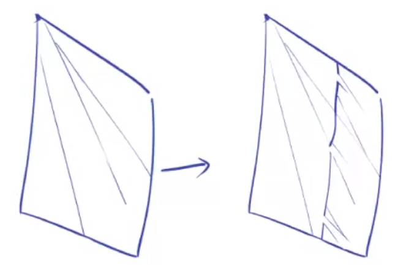

日系人体绘画总结
日系画风与现实的区别
- 真实的“三庭五眼”：
- 三庭：d(发际线, 眉骨) = d(眉骨, 鼻底) = d(鼻底, 下巴)
- 五眼：眼宽=眼间距=眼睛到面部轮廓的距离
- 眼睛的长度相对真实比例更长的，并不符合三庭五眼中的五眼比例。而是眼睛宽度和眼间距大体相同且较长，而眼睛两边到脸部轮廓的距离更短。

日系男生与女生刻画的特点与区别
女生
- 头部的高宽比偏小，脸部偏短。
- 面部相对较圆，使用更多的曲线。
- 五官相对下移，留出更高的额头放刘海。
- 眼睛是刻画的重点，它很大。
- 眼型偏圆的居多。
- 弱化鼻子、嘴巴、眉毛等的刻画。
- 眉毛和眼睛间距较大。
- 表情方面更多的表现出萌、可爱、甜美，总体偏美型。
男生
- 头部的高宽比更大，脸部较长，或是更偏向真实比例。
- 面部外轮廓使用更多的直线、锐利的线条。
- 脸型更方正/直。
- 眼睛相对女生来说较小，或说较细，高度较低，但长度还是相对真实比例更长的，并不符合三庭五眼中的五眼比例，而是眼睛宽度和眼间距大体相同且较长，而眼睛两边到脸部轮廓的距离更短。
- 眼型偏平行四边形的居多。
- 同样眉毛也被着重刻画，意在表现男生的英气、帅气等。
- 眉毛和眼睛间距小。
- 弱化鼻子和嘴巴的刻画，但又比女生强一点，女生往往可以归结为一个点，而男生还是要刻画的。中老年男人鼻子甚至非常明显。
- 表情方面更偏向于酷、帅、冷、不耐烦的感觉。
日系年龄对面部画法的影响
男生
- 年轻人的用线会相对圆润，越年长线条越锋利。
- 年长者的面部转折点会更向上部靠拢，五官也相对向上。
- 年长者的眼睛更窄，同样是更加锐利的感觉；而年轻人可以稍微眼睛大一点，高一点，圆一点。
- 年长者的眉毛会更尖锐有力。
- 年长者的下巴会更宽一些。
女生
- 同样，年长者最重要的是脸部转折点上移。
- 年长者五官上移。
- 年长者眼睛变窄。
- 曲线更加有力。
总结
- 在年龄变化的刻画上，更加着重地去刻画性别的特点，卡点和转折更重。
- 角色设定是一个把文字设定转为标签化的预设人体特征的过程。比如不同的眼型、不同的睫毛表现、不同的眉毛表现、不同的面部外轮廓等。
眉眼结构
- 男生眉毛粗，离眼睛近。画的时候要压低、往下放。
- 女生眉毛细，离眼睛远。画的时候要提高、往上走。女生眉毛很多时候更像是一条线。
- 眉眼的侧视图大致是正视图宽度的。
口鼻的画法
- 嘴角处要卡点（加重），无论嘴多么小，改卡点的都要卡。嘴的中间要相对画的较虚，若隐若现感觉。
- 与真实的人不同，日系画法中往往不刻画上嘴唇，但有时还是会把下嘴唇用一根线带过。
- 张开的嘴最好画出牙齿和舌头。
- 微笑最好画出左右斜向下箭头的形状。同理，微微噘嘴要画出左右斜向上箭头的形状。
- 侧面张开的嘴是梯形的。
- 鼻尖也需要卡点。
- 男性的鼻子长，嘴巴宽；女性的鼻子小、短，嘴巴窄。
- 虽然女生鼻子很多都是一个点，但这个点是有方向和轻重的。方向是面部朝向，而轻重则是点的起笔重（上方），落笔轻（下方）。
男性口鼻示例
女性口鼻示例
面部示例
女生
男生
整体注意事项
- 绘制步骤：找参考->打型->细化->调整
- 画的过程中要不断重复一下几个检查：
- 头部的角度
- 角色性格相对应的五官形状
- 不断放大缩小去看位置和透视
头发的绘制
-
绘制的顺序：
- 观察参考
- 确定发心（刘海中心点）或发中线位置
- 分块画草图
- 细化
-
头发多样性的体现：
- 粗细变换
- 不能过于对称（粗细、位置高低、头发的根数）
- 头发的方向（发旋、贴头弯曲、呆毛和不规则发）
- 动态变化

-
头发的最大分块可分为：前发（刘海）、中发（一般到脸或肩的侧面头发）和后发。前中都可以没有，但后发一定有。
-
各种发型可以看做各种前中后发的组合。
-
后发不能紧贴头皮，要预留一定距离、体现蓬松感。
-
好的发型的绘制其剪影也是很好看的。
-
注意发梢在脖子周围行程一个圆，而不是直线。这点在短发情况下尤其明显。
-
颈部后面会有短小的头发。
-
发梢是头发的灵魂。不同种类的头发其发梢差距由其之大，比如直线型、尖锐型、折叠型等。
-
发梢部分，尤其是后发，尽量往里收，除非发型就是翘的。
-
长卷发会偏向成熟魅力的气质、长直发偏向冷酷高贵、短直发更多偏向清纯感和学生感、短卷发偏可爱活力。
-
卷发的基础是一撮头发，每一撮头发的基础是S型线，分清楚里外。先画大的S，最后画装饰线。

-
画长发，尤其是长卷发，最重要的是即使线条乱，也不能被线条带节奏，要搞清楚每一片头发的从属关系。


辫子
-
绘制辫子的时候要尤其注意线条的虚实，营造穿插感。加细节的时候一定要注意碎发也要顺着辫子的大体走势绘制。
-
马尾辫：年龄越大、马尾越低。马尾朝向斜向上的辫子要先上升后下降。
-
相较于披散发，辫子的翻转更多。
-
辫子中，总会有一些短的、碎的头发丝无法被扎到辫子主流中，他们构成了有效的细节。
男性头发
-
男性头发如果是向外翘，显得有攻气；向内卷，显得温柔和受气。
-
长发的男性角色，可以直接参照女性头发画法。
发型设计
-
设计流程：
- 分块
- 分组（使用不同的元素）
- 组合设计
- 不同的发型出来上がり～


发饰与其他装饰道具的绘制
蝴蝶结和蝴蝶结类似物分类
- 固定形状的，即卖的时候就是打好的那种蝴蝶结。实心、较大，常用作头饰和领结。
- 手打的空心蝴蝶结。同样较大，除了头饰和领结，还可以用作围裙后面等。
- 飘带。由一根细长扁平的带子打出来的蝴蝶结。易随风飘动，且由于体积较小，需仔细控制。
- 小型点缀式的蝴蝶结。用作小型装饰物，出现在头上（发卡）、衣服上、口袋上等等。
- 以上的组合和变形。
发库：
- 注意不能沿着头部轮廓画。
- 应该先找出来面部竖直轮廓线，然后保证发库与它垂直。
- 尤其注意透视现象，发库的末端结束于耳朵后面。
帽子
-
偏头顶（正）：棒球帽、礼帽、田园风
-
后脑勺：贝雷帽、太阳帽
-
棒球帽的画法：
- 帽子的中线与头部中线平齐
- 注意帽子的外形
- 适当的给帽檐增加厚度
-
太阳帽的画法：
- 位置偏脑后
- *帽檐的形状
- 适当的装饰：缎带、蝴蝶结、鲜花等
- 画的时候即使后面的帽檐部分被脑袋遮挡，还是要先画出来、确保左右是连着的线。
眼镜
-
可爱风：镜框偏大、偏圆、可以抹除上眼镜框。这样的好处是可以避免眼镜挡住眼睛。
-
成熟风：眼型本来就偏小，眼镜也就偏窄。
-
性感风：无镜框、偏窄。
-
搞事派：镜片反光。。。如柯南开始推理、坂本大佬等。
-
画法要点：
- 两个关键支点：鼻梁、耳朵
- 眼镜中线呈直线型：镜片透视保持一致
- 在画眼睛之前先画出来一个能包裹住两个镜片的矩形外框
表情
分类
-
微笑（尴尬而不失礼貌的）
- 口型就外八字点两点就好，注意卡点
-
开口笑
- 开口是梯形类似物
- 开口的大小要多尝试，因为不同人物适合的大小并不相同
-
狂笑
-
闭眼笑
- 眼睛即使闭上了也不是一条单调的线，而是有形状有细节的
- 那条线在之前上下眼睑中间
-
怒（攻气、傲慢、盛气凌人）
- 眼角上扬
- 眉毛外八字，也是上扬
- 嘴中间向上弯曲（即曲线向上凸）
-
哀（受气、可怜）
- 眼角向下撇
- 眉毛正八字
- 嘴会很小
-
三无少女
- 无口无心无表情
- 嘴部很小很小，一般就是一个点
- 由于本来角色就不怎么有表情，所以眼睛和眉毛移一直都是放松状态
-
邪魅一笑（色气）
- 面部红晕
- 特制笑容
-
微微哭泣
- 委屈+抿嘴
- 少量眼角泪花
- 面颊红晕
-
大哭
- 委屈加强版，眉毛继续八字
- 眼睛高度减小，下眼睑向上挤压
- 有眼泪元素
- 嘴张开，露牙齿
- 面颊红晕
-
害羞
- 大片的面部红晕，可以覆盖眼睛下面一长条包括鼻子位置
-
傲娇
- 害羞+怒
- 可以用微汗点缀
- 小虎牙
-
病娇（诡异）
- 眼球和上眼睑不是连着的，之间隔着一点眼白
- 嘴部有不对称元素
- 视角可偏仰视
复杂表情构成
- 基础表情（不同程度的笑、哭、哀）
- 不同角度、身体转向（比如表现委屈、惹人怜爱、哭泣可以采用俯视，而表现惊悚和恶役则可使用仰视，元气可爱灵动可用各种侧视图等）
- 肢体动作（如手部动作）
漫画与插画的区别
- 相较于漫画，插画更偏向于整体人物的唯美性，表情一般不会很夸张，笑脸会占据大半。
- 漫画则相对束缚较小，可以画各种各样奇奇怪怪的夸张表情来凸显人物心情和推动剧情。
衣物的画法
衣服的分类
女生： 制服（JK）、女仆装、泳装、和风服饰（和服、浴衣）、LOLITA、idol（舞台装）
男生： 衬衫、西服、卫衣、T恤
画法要点
- 注意与人物形体的关系，不要直接画衣服
- 受力情况
- 搭配、元素组合
- 设计（饰品）
- 参与构图
衣褶
衣褶的成因
- 衣褶是受支撑点和地心引力的拉力影响而形成的褶皱。
- 如果没有内部结构就没有布纹衣褶的存在。
- 拉伸的力抹平衣褶，收缩的力形成衣褶。
衣褶多的地方
- 和内部支撑物之间空间较大的地方（宽松领口、古人衣服、宽松袖子、卫衣腰部）（相反：紧身衣、内衣、丝袜）
- 受到收缩外力明显的地方（腰带处、袖口、撸起来的袖子、关节内缩侧）（相反：关节绷紧侧）

-
人体中衣褶多的位置列举：
- 领口
- 腋下
- 弯曲的胳膊腿的内侧
- 腰部
- 裆部（裤褶、裙褶）
- 裤脚
- 其他所有的有转折的地方
- 妹子胸部下部
- 腰带、绳带处
- 扣子处


褶皱理论
一点支撑
褶皱形状：放射状
常见位置
- 肩部
- 胸部中下侧
- 绳带
- 膝盖
- 手肘
两点支撑
两点支撑可以看做两个一点支撑去掉内侧的线然后连起来。
常见位置：
- 领口
- 腰部（胯）
- 宽松的XX（袖子、裤子、腰）
褶皱画法
穿插
简单的说，穿插就是A插到了B里面。由于褶皱弯曲，有时候会鼓起来突出一块，其效果就是下游的布料插进了上游的布料所形成的褶子里面。
由于视角的不同，让穿插呈现出2中绘制结构。
运用范围：衣袖、腰部、手肘（弯曲）、腿部（弯曲）。。。
堆叠
堆叠，即把过长的部分堆起来。其形如阶梯，但各阶形异。论其走线，莫有完全平行者，目之所及，皆为交错向下；间有内陷，若小水洼。

裁缝线
-
作用：分摊拉力。假设如果没有裁缝线时只有几个大的衣褶纹路，此时加上一根裁缝线，则在原来的褶皱纹路基础上会出现许多细小的褶子，此即为所谓“分摊拉力”。

雷区
- 褶皱太少，状似铁皮（布的质感）
- 衣褶过多，如着破布（不美观）
- 衣褶位置不对
- 线条太实或太虚
服装的质感：软与硬
- 软的衣服（如水手服、T恤）：
- 褶皱相对偏多
- 褶皱规律性弱
- 褶皱线条柔软
- 布纹偏多
- 硬的衣服（如西服、制服）：
- 褶皱相对较少
- 褶皱规律相对较强
- 褶皱线条偏硬
- 布纹偏少
- 实际区分方法：线条
衣物绘制注意事项
厚度
布是有厚度的，我们画布的时候要注意在垂下的边角处线与线的交汇处不要接死，留出一定的空隙以体现布料的厚度。
虚实
我们在画衣褶的时候要注意线的虚实变化。交代清楚线的虚实，衣纹会更有活力，更生动。
外粗里细，主要褶皱粗、次要衣纹细。
大小对比
我们画衣纹的时候也要注意有大小对比，不要把每一个纹路画的一样大，这样会显得呆板无趣。
JK制服的画法
分类
上衣：水手服、衬衫+（∅、针织衫、西服、马甲、背心）
裙子：格子裙、净色裙、净色+条纹
领饰：领绳、领带、领结、领巾
变化
领口：圆领、尖领；长领口、短领口（向下延伸长度）；领子上带条纹、不带条纹
百褶裙堆叠方式：上下上下式、阶梯式
特点
- 水手服并不是收腰紧身的，而是使用了相对较硬的材质、在胸部以下更偏向线性延伸的。
示例
花边的画法
服装的设计
- 元素的组合——主元素、辅元素。如以和风为主，但辅以花边和宽松裙摆等Lolita的设计。
- 变形：打破传统，求异。如传统的和服袖子都很长，领结都在领子下面，而求异的设计就可以把和服的袖子缩短、领结直接绑在颈部。
- 切割：衣服的虚与实。这里的实指的是有布料覆盖的地方，而虚则是指切开露出、没有布料覆盖的位置。虚的位置往往可以出现在肩部、腰部、腿部、胳膊等。
- 对比：
- 体积的对比（大、小）
- 长度的对比（长、短）
- 娇小的角色穿宽松较大的服装（如埃罗芒阿老师、点兔、小埋）。宽大的衣服更显得角色本身的娇小。
- 性感的角色产布料较少的衣服，突出其身材
- 剪影：整体上突出主元素